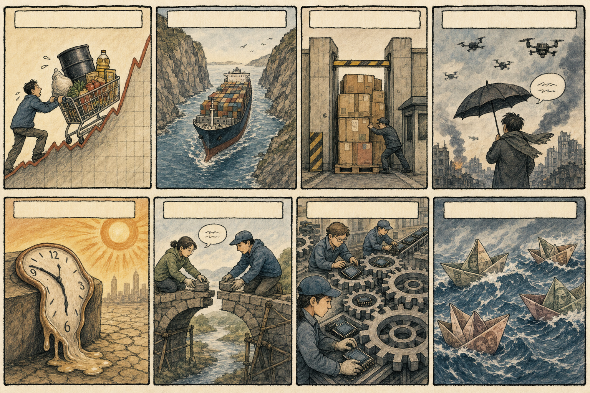
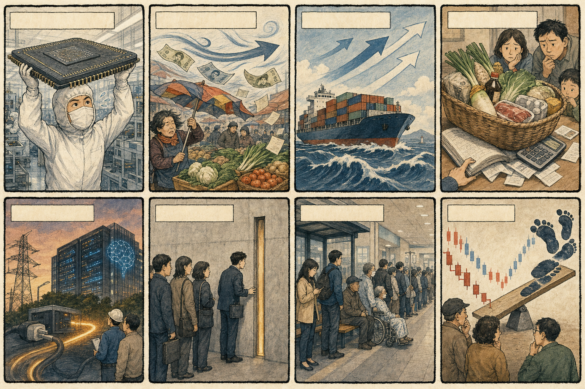

01
[속보] 뉴욕 증시 상승 마감…마이크론 12.17% 상승
내용요약 마이크론이 7월 21일 정규장에서 12.17% 상승했다는 마감 보도입니다. 반도체 저가 매수와 AI 메모리 수요 기대가 지수 반등을 이끌었습니다.
예상여파 국내 HBM·메모리 대형주의 외국인 수급 회복에 우호적이지만 장 초반 갭 상승 유지 여부를 확인해야 합니다.
MORNING_BRIEFING_20260722
작성 시각: 2026-07-22 06:41 KST · 직전 미국장 및 2026-07-22 KST 당일 공개 기사 기준
직전 미국 정규장인 7월 21일 장은 다우 +0.74%, S&P 500 +0.89%, 나스닥 +1.29%로 동반 상승했습니다. 기술주 중심의 위험선호가 되살아나 한국장에서는 반도체·AI 인프라가 우선 반응할 가능성이 높지만, 환율과 국제유가가 상승 폭의 지속성을 좌우합니다.
| 지수 | 종가 | 전일 대비 | 한국 증시 영향 |
|---|---|---|---|
| 다우존스 | 52,224.64 | +0.74% | 경기민감·방어주 간 온도차가 커져 코스피 대형주 선별 흐름에 영향 |
| S&P 500 | 7,509.20 | +0.89% | 위험선호 둔화 여부가 외국인 수급과 지수 변동성을 좌우 |
| 나스닥 종합 | 25,837.21 | +1.29% | 반도체 반등 여부가 국내 AI·성장주 심리에 직접 연결 |
다우존스 52,224.64(+0.74%); S&P 500 7,509.20(+0.89%); 나스닥 종합 25,837.21(+1.29%)로 마감해 위험선호가 회복됐습니다.
나스닥 상승률이 가장 커 국내 반도체·AI 대형주 수급에 우호적인 출발점입니다.
AI 데이터센터의 전력·냉각·망 투자가 전력기기와 설비 밸류체인으로 번지고 있습니다.
중동과 관세 뉴스는 원가·환율을 통해 수출주와 내수주의 온도차를 키울 변수입니다.
| 종목 | 전일 등락률 | 메모 |
|---|---|---|
| SK하이닉스 | +4.08% | 1,764,000원 → 1,836,000원. 마이크론 상승과 HBM 수급 회복 논리를 연결한 종목 |
| HD현대일렉트릭 | +3.46% | 752,000원 → 778,000원. AI 데이터센터 전력망 증설 수요를 연결한 종목 |
| S-Oil | -3.48% | 146,700원 → 141,600원. 중동 긴장과 정제마진 기대를 연결한 종목 |
| 지수 | 종가 | 전일 대비 | 해석 |
|---|---|---|---|
| 다우존스 | 52,224.64 | +0.74% | 경기민감·방어주 간 온도차가 커져 코스피 대형주 선별 흐름에 영향 |
| S&P 500 | 7,509.20 | +0.89% | 위험선호 둔화 여부가 외국인 수급과 지수 변동성을 좌우 |
| 나스닥 종합 | 25,837.21 | +1.29% | 반도체 반등 여부가 국내 AI·성장주 심리에 직접 연결 |
반도체·AI 인프라, 전력기기, 증권·인터넷 등 위험선호 민감 업종
유가 민감 항공·화학, 달러 비용 부담 업종, 실적 근거가 약한 단기 테마
내용요약 마이크론이 7월 21일 정규장에서 12.17% 상승했다는 마감 보도입니다. 반도체 저가 매수와 AI 메모리 수요 기대가 지수 반등을 이끌었습니다.
예상여파 국내 HBM·메모리 대형주의 외국인 수급 회복에 우호적이지만 장 초반 갭 상승 유지 여부를 확인해야 합니다.
내용요약 슈퍼마이크로가 사상 최대 수주잔고를 공개한 뒤 시간외 거래에서 17% 급등했다는 보도입니다. AI 서버 주문 가시성이 투자심리를 자극했습니다.
예상여파 국내 서버 부품·냉각·전력 인프라 종목에도 관심이 확산될 수 있어 실제 수주와 매출 연결성을 구분해야 합니다.
내용요약 인텔 주가가 7월 21일 6.82% 상승했다는 시장 보도입니다. 반도체 업종 전반의 저가 매수세가 개별 종목으로 확산됐습니다.
예상여파 국내 반도체 장비·소재주의 위험선호에는 긍정적이나 미국 반도체 상승의 지속성과 거래량을 함께 봐야 합니다.
내용요약 소형모듈원전 기업 오클로가 미국 정부의 AI 데이터센터용 원자력 가속 프로그램 참여 소식에 강세를 보였다는 보도입니다.
예상여파 AI 전력 수요가 원전·전력망 투자로 연결되면서 국내 원전 기자재와 전력기기 업종의 수주 기대를 자극할 수 있습니다.
내용요약 모빌아이가 스텔란티스에 클라우드 기반 운전자보조 기술을 공급한다는 소식에 3% 상승했다는 보도입니다.
예상여파 국내 자율주행 센서·전장 부품주는 고객사 확대와 양산 시점을 중심으로 선별 반응할 가능성이 있습니다.
미국 3대 지수의 동반 상승과 나스닥의 상대강도는 국내 반도체·AI 성장주에 우호적입니다. 전일 SK하이닉스와 전력기기가 반등한 뒤라 개장 초 추격 매수보다 외국인 현·선물 순매수의 지속성과 삼성전자 동반 강도를 확인하는 편이 중요합니다.
| 한국 종목 | 연결 이유 | 단기 확인 포인트 |
|---|---|---|
| 삼성전자 | 나스닥 +1.29%와 AI칩·데이터센터 투자 뉴스가 국내 반도체 대형주의 위험선호 회복으로 연결됩니다. | 외국인 순매수, SK하이닉스 대비 상대강도, 시초가 갭 유지 |
| LS ELECTRIC | AI 데이터센터 전력 수요와 전력망 병목이 배전·자동화 설비 수주 기대를 높이는 흐름입니다. | 전력기기 동반 거래대금, 신규 수주 공시, 기관 수급 |
| 한화에어로스페이스 | 세계 안보·방공 뉴스가 유럽과 중동의 방산 지출 및 수출 파이프라인 기대에 연결됩니다. | 해외 계약 후속 보도, 원/달러 환율, 방산주 내 상대강도 |
미국 기술주 상승이 외국인 현·선물 수급과 코스닥 거래대금으로 이어지는지 봅니다.
당일 국제 뉴스가 원/달러 환율과 국제유가 기대에 미치는 영향을 점검합니다.
직전 미국 반도체 반등 뒤 국내 대형주의 방향과 추격 매수 지속 여부를 확인합니다.
필리핀 회담의 관세·수출통제 발언이 아시아 수출주 심리에 미치는 영향을 봅니다.
핵심 요약: 생성형 AI 워터마크 규제, 금융권 서비스 도입, AI 플랫폼 시장의 63.4% 성장 전망, 스타트업 육성, 유럽 모델 기업의 대형 인프라 계약이 규제·수요·자본·컴퓨팅의 흐름을 함께 보여줍니다.
내용요약 생성형 AI 결과물의 워터마크 의무화와 고영향 AI 관리체계가 가동된다는 보도입니다. 산업 확산과 함께 투명성·책임 기준이 구체화되고 있습니다.
예상여파 AI 서비스 기업에는 준법 비용이 늘 수 있고, 보안·검증·콘텐츠 인증 솔루션에는 신규 수요가 생길 수 있습니다.
내용요약 뱅크오브아메리카가 생성형 AI를 활용해 고객지원 기능을 강화했다는 보도입니다. 금융권의 AI 도입이 내부 실험에서 실제 서비스로 이동하고 있습니다.
예상여파 국내 금융 IT·클라우드·보안 업체에는 레퍼런스 확대 기회가 되지만 개인정보 보호와 정확성 관리가 핵심입니다.
내용요약 올해 AI 모델·플랫폼 시장이 전년보다 63.4% 성장할 것이라는 전망입니다. 기업용 AI 도입이 모델과 운영 플랫폼 수요를 함께 키우는 흐름입니다.
예상여파 클라우드·데이터센터·AI 소프트웨어 밸류체인에는 우호적이나 투자 대비 매출 전환 속도를 확인해야 합니다.
내용요약 SK텔레콤이 AI 스타트업 육성 프로그램을 출범하고 참여 기업 모집에 나섰다는 보도입니다. 통신사의 AI 생태계 투자가 초기 기업 발굴로 이어집니다.
예상여파 국내 AI 스타트업의 사업 제휴와 후속 투자 기회가 넓어질 수 있으며 실제 공동사업 계약이 중요합니다.
내용요약 마이크로소프트가 프랑스 AI 기업 미스트랄과 수십억 달러 규모의 인프라 이용 계약을 맺었다는 보도입니다.
예상여파 유럽 AI 모델 경쟁과 클라우드 연산 수요가 커져 데이터센터 전력·서버 공급망의 중장기 수요를 지지할 수 있습니다.
핵심 요약: 호르무즈·홍해의 원유 수송 우려, 러시아·우크라이나의 대규모 공습, 네덜란드의 점령지 무역 중단, 미중 외교장관 회담, 미국의 캐나다산 상품 관세가 에너지·안보·통상 시장을 동시에 흔들고 있습니다.
내용요약 중동 긴장과 원유 공급 우려가 시장의 핵심 변수로 부상했다는 보도입니다. 유가와 환율이 함께 움직이면 위험자산 선호가 약해질 수 있습니다.
예상여파 정유·해운·방산에는 단기 관심이 붙을 수 있고, 항공·화학·소비주는 비용 부담을 점검해야 합니다.
내용요약 러시아와 우크라이나가 수도권을 겨냥해 비축 미사일과 드론 400여 대를 동원했다는 보도입니다. 장거리 공습의 강도가 다시 높아졌습니다.
예상여파 유럽 방공·드론 대응 지출과 에너지·물류 위험 프리미엄이 확대돼 방산과 해운 가격에 영향을 줄 수 있습니다.
내용요약 네덜란드가 9월부터 이스라엘 점령지와의 무역을 중단하기로 했다는 보도입니다. 가자 전쟁 관련 외교·경제 압박이 유럽에서 확산하고 있습니다.
예상여파 유럽의 추가 제재 여부에 따라 중동 교역과 해운·에너지의 불확실성이 이어질 수 있습니다.
내용요약 미국과 중국 외교장관이 22일 필리핀에서 만나 정상외교와 양국 현안을 논의할 전망이라는 보도입니다.
예상여파 회담 결과는 관세·수출통제와 아시아 공급망 심리에 영향을 줄 수 있어 반도체·수출주의 변동 요인입니다.
내용요약 미국의 조건부 관세 인센티브와 캐나다산 상품 추가 관세, 다자무역 질서 변화가 당일 핵심 통상 변수로 제시됐습니다. 생산기지 위치와 원산지가 가격 경쟁력을 좌우하는 흐름입니다.
예상여파 자동차·알루미늄·수출 제조업은 관세 적용 범위와 현지 생산 계획에 따라 비용과 수주 기대가 엇갈릴 수 있습니다.

핵심 요약: AI 반도체 경쟁과 원화 변동, 주택담보대출 규제, 청년 고용 미스매치, 반도체 의존 성장 구조가 국내 시장의 수급과 체감경기를 가르는 핵심 변수입니다.
내용요약 AI 반도체와 메모리 공급망을 둘러싼 당일 기사입니다. 투자자들은 실적 눈높이와 수요 둔화 가능성을 동시에 확인하고 있습니다.
예상여파 삼성전자·SK하이닉스·반도체 장비주의 장중 수급이 민감하게 반응할 수 있습니다.
내용요약 대출 심사가 강화되는 가운데 중소기업 연체율까지 상승해 자금 조달 여건이 팍팍해지고 있다는 당일 보도입니다. 금리와 신용 위험을 함께 관리해야 하는 금융권의 부담이 커지고 있습니다.
예상여파 은행에는 건전성 관리가, 중소기업과 내수에는 이자·운전자금 부담이 핵심 변수여서 연체율과 대출금리 방향을 확인해야 합니다.
내용요약 원/달러 환율이 1,560원 부근의 고점 위협 뒤 1,470원대로 내려왔고, 반도체 대형주로 유입된 외국인 자금이 원화 수요를 키웠다는 분석입니다.
예상여파 원화 안정은 외국인 수급과 항공·유통 등 달러 비용 업종에 우호적이지만 수출주의 환산 이익 기대는 일부 낮출 수 있습니다.
내용요약 구직·교육 현장을 떠난 청년 증가의 배경으로 교육과 고용의 미스매치를 짚고, 일자리 수보다 개인의 전환을 지원해야 한다는 보도입니다.
예상여파 청년 고용정책이 직업훈련·채용보조에서 경력 전환과 장기 고용 유지 중심으로 이동할 가능성이 있습니다.
내용요약 AI 반도체와 메모리 공급망을 둘러싼 당일 기사입니다. 투자자들은 실적 눈높이와 수요 둔화 가능성을 동시에 확인하고 있습니다.
예상여파 삼성전자·SK하이닉스·반도체 장비주의 장중 수급이 민감하게 반응할 수 있습니다.
